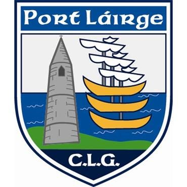

Hello! Welcome to my website. My name's Becky - Feel free to browse around and get to know me better!
| Navigation | |
|---|---|
| Home | My Hobbies |
| Family | My LinkedIn |
| References | |
Hobbies took a backseat for me over the last two years, when all my spare time was dedicated to homework and study for the Leaving Cert! But now that I'm in college, thankfully, I find I have more spare time to keep up with my hobbies!
Here are my top 3 hobbies/interests:
I was pretty rubbish at art in primary school to be honest so God knows what led me to pick it as a subject for my Junior Cert but I'm so glad I did! I really got into it and by the time I was in TY it was something I enjoyed and did regularly in my spare time.
I enjoy all kinds of art. The pictures above are birds which I made with oil pastels, a pencil sketch of a puppy, and a canvas I painted with watercolour of my dog Pepper. I enjoy experimenting with soft pastels, coloured pencils, and clay 3D modelling as well!
I don't like listing gaming as my first hobby because I know for a fact there is a community of people who game more than me! Regardless, I do enjoy it, especially console gaming (PS4).


My favourite games are story based, such as the titles I included above: Bioshock (my favourite games ever!), God of War, Outlast, and The Last of Us.
Something I always had time for, even during the LC, was YouTube. Putting on videos was/is always a nice, effortless way to unwind for me.
My favourite YouTuber is PewDiePie - I've been watching him for nearly 10 years now! I also enjoy watching Jenna Marbles, Cody Ko, Noel Miller, Willne, and Memeulous.